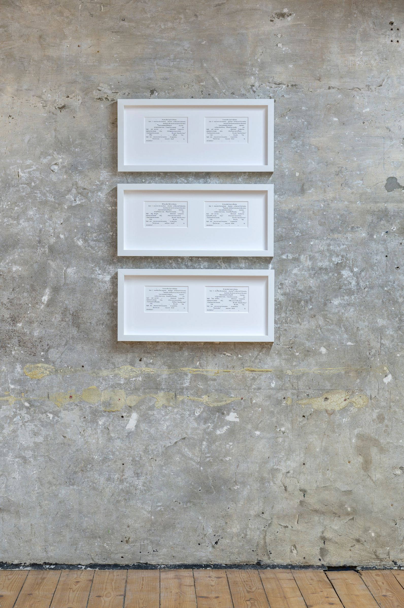
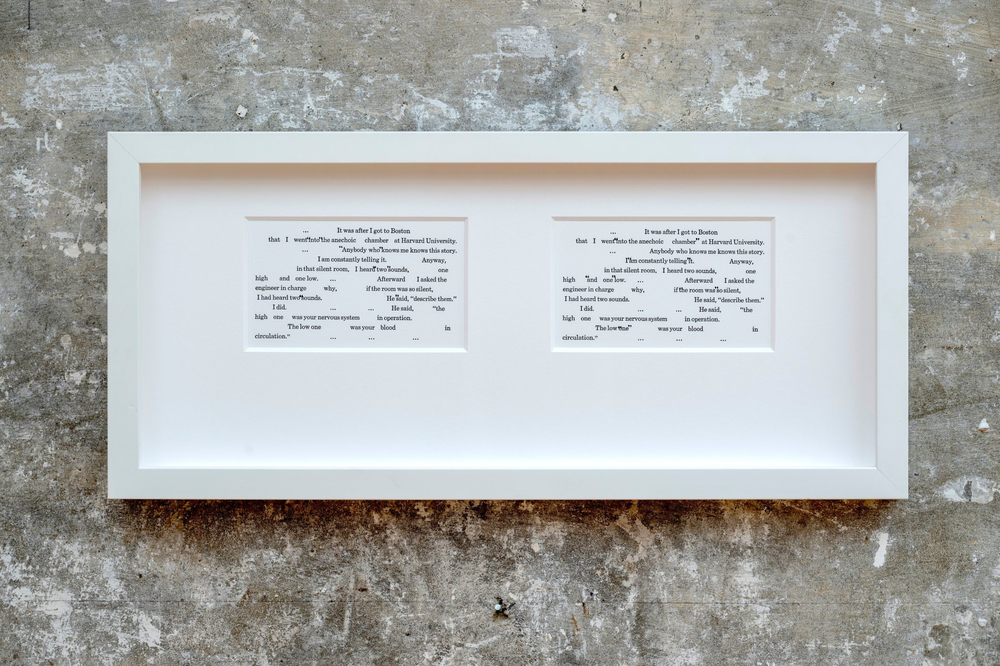
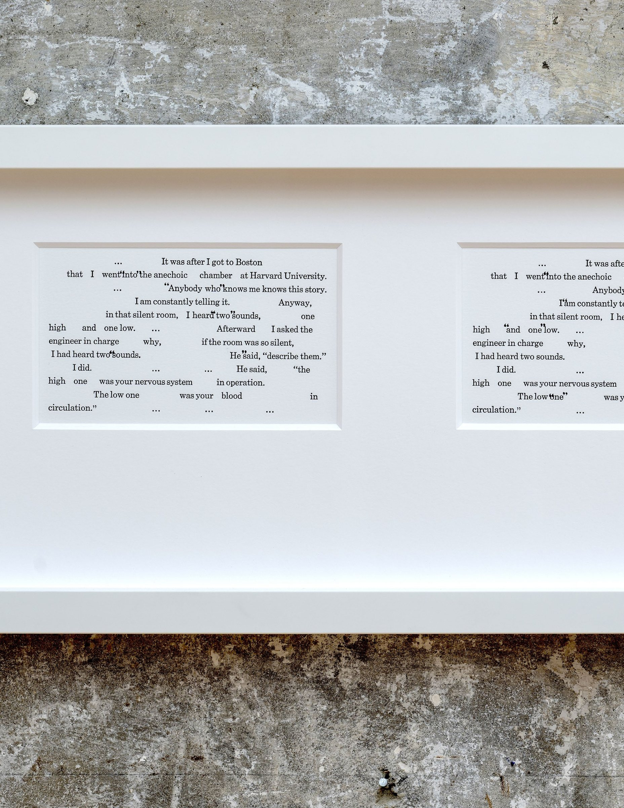

Variations for the Healing, 2025–26
Variations for the Healing presents a single text in twelve pairs of letterpress iterations, each of which includes a set of stamped quotation marks around different words and phrases.


